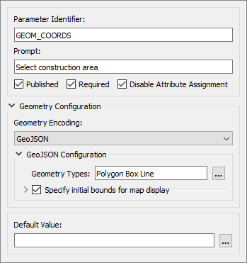
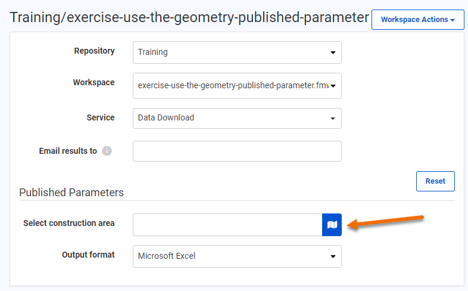

After completing this unit, you’ll be able to:
As a technical analyst in the GIS department of a city, you are responsible for managing a workflow for mailing construction alerts to residents who might be affected by noise from City construction work. Normally you have to generate the list of affected residents yourself. However, you'd like to let the construction teams generate the list themselves, saving you valuable time.
So far you have created a workspace that generates the list of affected residents and allows users to choose the format for their data download. Now you need to add a Geometry published parameter to let users interactively choose their area of interest.
Open the starting workspace.
The starting workspace is in progress. It already has a published parameter that lets users choose the output format. You can find them by looking at the Navigator > User Parameters > Published Parameters. Right-click FORMAT and choose Manage User Parameters to view its configuration:
This parameter lets the user choose the output format for the data they receive. The default is Microsoft Excel.
This parameter gives the user the option of four output formats (GeoJSON, OGC GeoPackage, Esri Shapefile, or Microsoft Excel). Using Choice with Alias like this lets you provide a set of formats or coordinate systems to the user, instead of letting them pick from the entire list. This option can be beneficial as it is less overwhelming to the user and can prevent incorrect outcomes. Click Cancel to close the Parameter Manager.
Now let's edit this workspace so the user can define the area where construction will be occurring. The first step is to add a Geometry published parameter. In the Navigator, right-click User Parameters and choose Manage User Parameters:

Create a new parameter with the following options:
| Type | Geometry |
| Parameter Identifier | GEOM_COORDS |
| Prompt | Select construction area: |
| Published | Checked |
| Required | Checked |
| Disable Attribute Assignment | Checked |
For Geometry Configuration, click on the ellipsis and enter the following:
| Geometry Encoding | GeoJSON |
| Geometry Types | Polygon, Box, Line |
| Specify initial bounds for map display | Checked |
| Top (-90..90) | 49.2548 |
| Left (-180..180) | -123.244 |
| Bottom (-90..90) | 49.3034 |
| Right (-180..180) | -123.071 |
The initial bounds will be the area shown in FME Server. Larger bounds will have the map zoomed out, and smaller bounds will have the map zoomed in. Your dialog should look like this:

Click OK to close the Parameter Manager.
Now that we have set up the geometry published parameter, we need to use it within the workflow. Add a GeometryReplacer in a new stream after the Creator transformer.

Open the parameters for the GeometryReplacer. Set the Geometry Encoding to GeoJSON and then set the Geometry Source to the GEOM_COORDS published parameter.

Click OK.
We want to ensure that FME knows our data is in LL84, as this is what the Geometry published parameter accepts as values. Add a CoordinateSystemSetter transformer after the GeometryReplacer. In the parameters, set the Coordinate System to LL84.

Our source address data is in UTM83-10. It is more appropriate to buffer and intersect data in a projected coordinate system, so we will reproject both streams of data to UTM83-10. Add the first Reprojector after the CoordinateSystemSetter. Set the Destination Coordinate System to UTM83-10.

Add a second Reprojector between the FeatureReader and the NotifyList writer feature type. We have to make a slight change to the address data coordinate system. Set the Destination Coordinate System to UTM83-10 and click OK.
Your workspace should look like this:

We need to add a 100-meter buffer around the area of interest to find which neighboring residents might be affected by construction noise and must be notified. Add a Bufferer transformer connected to the first Reprojector. In the parameters, set the Buffer Distance to 100 and set the Buffer Distance Units to Meters.

Now we need to apply the buffered area of interest to our data. To do this we will use a Clipper transformer. Add a Clipper transformer to the canvas and connect the Bufferer's Buffered port to the Clipper input port. Then connect the Reprojector_2 to the Clippee input port. In the Clipper parameters, enable Merge Attributes.

Click OK.
One final step before we can write out our data is to clean up the attributes. Add an AttributeKeeper to the canvas and connect it to the Inside output port on the Clipper.
In the parameters, for Attributes to Keep, select:
Click OK.
Let's test our workspace by writing the results to a Shapefile. Connect the AttributeKeeper to the NotifyList writer feature type and run your workspace. Select Esri Shapefile as the output format.
For the Geometry parameter, we have to supply GeoJSON to test on FME Desktop. On FME Server you can use a web map. Paste the following GeoJSON code in to test:
{"type":"Polygon","coordinates":[[[-123.131762,49.282752],[-123.132148,49.282465],[-123.131579,49.282087],[-123.131139,49.282332],[-123.131762,49.282752]]]}When the translation finishes, click the NotifyList writer feature type once to select it and then click View Written Data. Specify Esri Shapefile for the Format and add NotifyList.shp to the end of the Dataset parameter:

Click OK. The addresses to notify, those within 100m of the area of interest, should appear in the Visual Preview window.

With the workspace complete, we can now publish to FME Server. Click on the Publish button on the toolbar. Select the Training FME Server connection and the Training repository. Select Data Download and Job Submitter as the Services.
Click the Direct Link to the workspace in the Translation Log (http://localhost/fmeserver/#/workspaces/run/Training/exercise-use-the-geometry-published-parameter.fmw) and log in if necessary.
Select Training as the Repository and set the Service to Data Download.
For Published Parameters, you should see the Select construction area parameter. Click on the map icon to select the area.

When you click on the map icon, the Geometry Picker dialog will appear, which will have a map of the area set up in the published parameter, as well as options along the side to determine which geometry type you wish to use for your selection.

Zoom into the area of interest. For this example, we will zoom into downtown Vancouver and use the polygon tool to pick a small area of buildings.

Once the area is selected, click Confirm. GeoJSON coordinates will now be available in the Select construction area text box.
Once the map area has been selected, click Run to run the workspace.
When the workspace has finished running, click on the download link to get the data. Extract and open the data in Microsoft Excel or FME Data Inspector. This list can then be used to send letters to the residents affected by the construction.